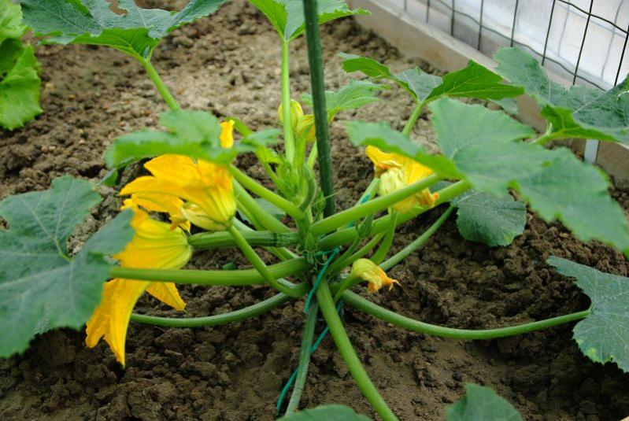

Produzione 2019
Zucchine

Coltivare in terreno molto ricco di materia organica e non coltivare dopo Solanacee o piante della stessa famiglia delle cucurbitacce
- Varieta:Zucchina chiara di Faenza
- Periodo di semina:Marzo/Aprile
- Primo raccolto:Fine Aprile
- Ultimo raccolto:Fine Luglio
- Raccolto
| Dimensione |
Quantità |
| Piccole (10 cm) |
16 |
| Medie (10-16 cm) |
26 |
| Grandi (>16) |
9 |
|
51 |
>>Acquista semi<<
Pisseli

American Wonder:Varietà media precoce come ciclo culturale
Consigli
-
Pianatre in semenzaio riscaldato.
E importante:
- Acquistare vasetti biodegradabili (di cocco e cartone)
- Mantenere areato il semenzaio per evitare muffe
- Non usare il coperchio del semenzaio
- Non usare metter il semenzaio vicino al termosifone
- punro 2
- punto 3
>>Acquista semi<<